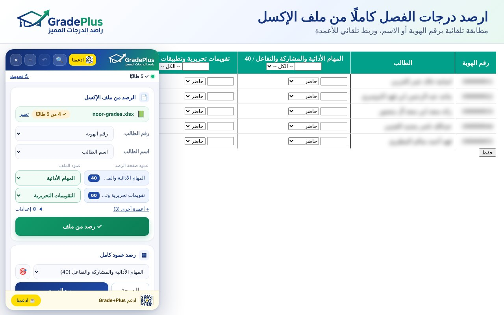
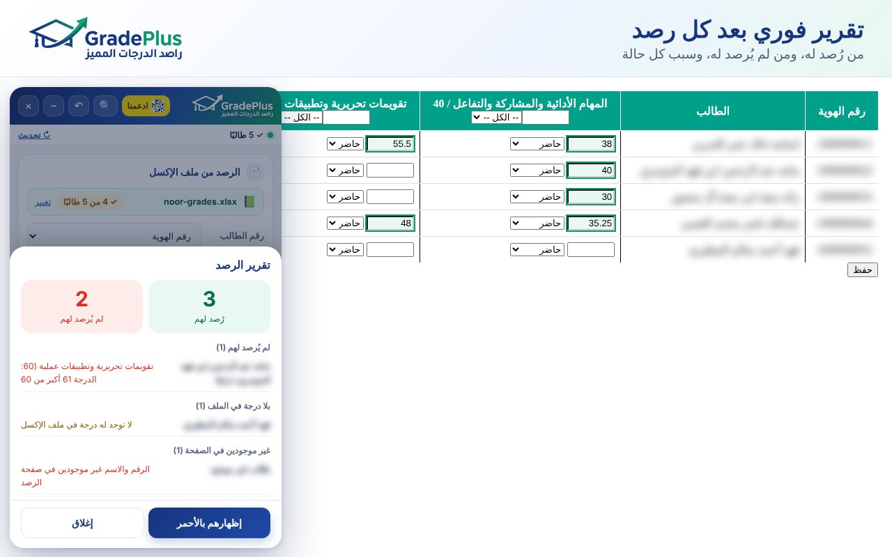
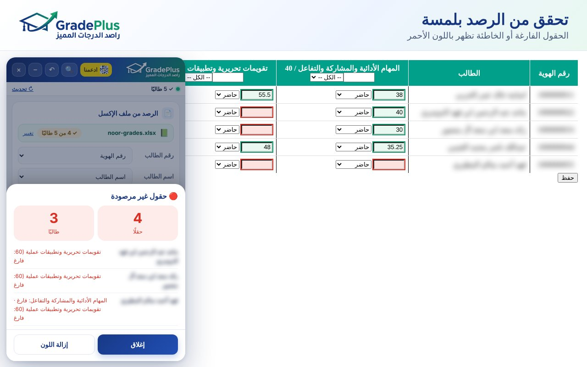
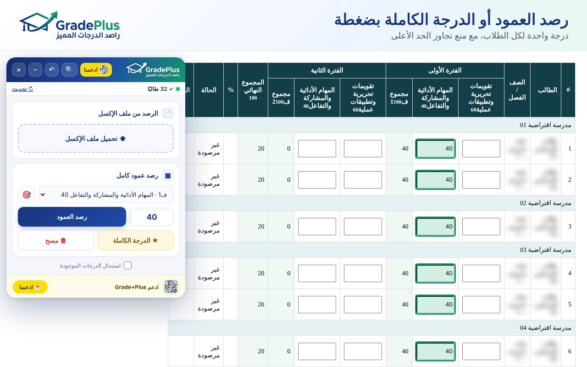

ارصد درجات الطلاب من ملف الإكسل بضغطة زر
إضافة لمتصفح كروم تنقل الدرجات من ملف الإكسل إلى صفحة الرصد، وتطابق كل طالب برقم هويته أو اسمه. تعمل في أغلب مواقع ومنصات رصد درجات الطلاب.
📄 من الإكسل مباشرة
اختر الملف، وتتعرف الأداة على الطلاب وتربط أعمدة الدرجات تلقائيًا.
🪪 مطابقة دقيقة
برقم الهوية أو بالاسم، وليس بترتيب الصفوف، مع تجاهل فروق الكتابة الشائعة.
✏️ درجة للجميع
درجة واحدة لكل طلاب الصفحة، مع منع تجاوز الحد الأعلى للحقل.
📋 تقرير فوري
من رُصد له، ومن لم يُرصد له، وسبب كل حالة.
🔍 تحقق بالأحمر
الحقول الفارغة أو الخاطئة تظهر باللون الأحمر في صفحة الرصد.
🔒 خصوصية كاملة
كل شيء داخل متصفحك. لا خوادم، ولا جمع بيانات، ولا ضغط على زر الحفظ نيابة عنك.
كيف تعمل؟
- افتح صفحة رصد الدرجات واعرض الطلاب، ثم اضغط زر الإضافة.
- اختر ملف الإكسل الذي فيه رقم الهوية أو اسم الطالب ودرجاته.
- تأكد من ربط الأعمدة، ثم اضغط «رصد الدرجات».
- راجع التقرير، ثم احفظ من زر الحفظ في الموقع.
صور من الأداة



